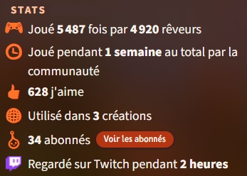

| Innovation Leonard | Certification | Compétences Développées | Loisirs |
|---|---|---|---|
Dans la Pratique
Innovation Leonard
5 innovations en développement VB
Openclassrooms
Certification Java obtenue
Certification JavaScript obtenue
Certification HTML5 et CSS3 obtenue
Certification Python obtenue
Certification PHP et MySQL interrompue (suite à l'obligation d'installer MAMP sur l'ordinateur pro)

Compétences développées
| Java | JavaScript | HTML5 & CSS3 | Python |
|---|---|---|---|
|
|
|
|
Pour n'importe quel code : écriture structurée, respect des standards (Camel Case), une fonction = une responsabilité, DRY (Don't Repeat Yourself)
Loisirs
Jeux de société
{kind=link}
Création de A à Z d'un jeux de société PvP / Coop. (début de jeux PvP, avec une fin de partie Coop, -connaissance de son rôle en fin de manche-), incluant :
- un système de construction de map aléatoire,
- des statistiques personnages (PV, taille de sac à dos, intelligence, combat, défense, déplacement et Vista)
- différents monstres (tous ayant une ou plusieurs capacité(s) propre, pouvant se combiner ou non)
- différents trésors (apportant des bonus/malus au personnage)
- des règles de jeux et un sytème de combat (Attaque / Défense des joueurs/montres en combiant les trésors et capacité(s) spéciale(s))
{kind=link}
{kind=link}
{kind=link}
De multiples améliorations ont dû être nécéssaires après la mise en place grace aux remarques d'amis joueurs, car forcément entre l'analyse et le schéma que j'avais en tête, les premièrs tests ne se sont pas déroulées parfaitement !
Escape Game
Plus difficle à imager bien que le schéma principale soit ICI,
le principe est le même que les "vrais" :
{kind=link}
- plusieurs objets dans la pièce (utile et inutile, les images qui commencent par un X),
- permettant de suivre 2 fils conducteurs principaux (les images dans un ordre chronologique et chronologiquee inversée, pour m'y repérer lors de l'installation) sur le modèle d'un arbre binaire inversé
- pour trouver des codes/clefs pour ouvrir des cadenas et passer aux suivants
Mon premier essai de création fut un tel succès auprès de mes amis, que je me sentis obligé d'en tenter un second. Vous pouvez trouver son schéma ICI si besoin
{kind=link}
Jeux Vidéo
Avec l'aide d'un jeux que j'assimilerais à du low-code, DREAMS, le but est de créer vos propres jeux. Je n'ai pas pu résister !

{kind=link}
Après avoir posé son ambiance de jeux, il faut définir un but que l'on paramètre : score ? temps ? traverser une map d'un lieu défini à un autre ? Puis penser à tous les paramètres de chaque objet nous entourant (en schématisant : mouvant/fixe, percutable/traversable, interaction possible ou non etc ...). Chaque mouvement de personnage, d'environnement doit être anticipé, testé et corrigé si besoin. La créativité et l'écoute du "client joueur" à but d'amélioration est au coeur de l'expérience.
Mon compte développeur Dreams.

Dont une création qui eu un grand succès
et reçu une récompense lors d'un concours